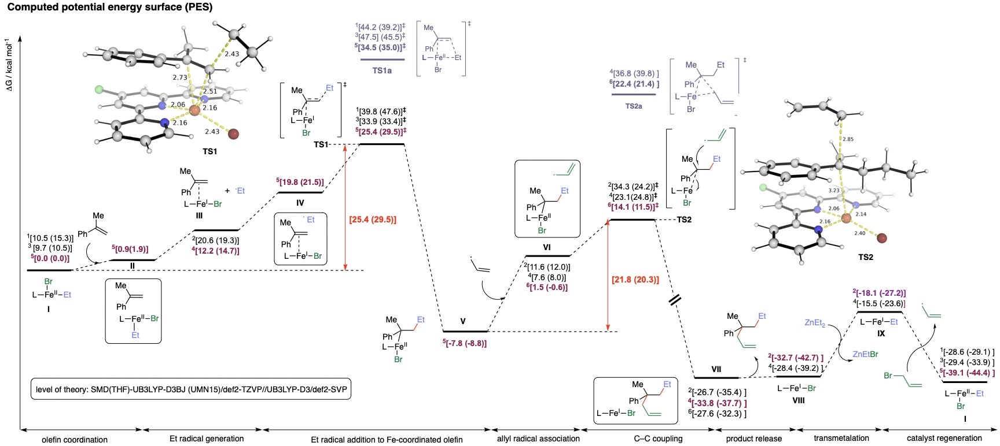

Research Interests
Research Summary
We are interested in employing electronic structure theory calculations, mainly relying on density funnctional theory (DFT), to perform computational mechanistic investigations of complex organic and organometallic catalytic systems of both academic and industrial significance. We currently focus on transition-metal catalysed C–H functionalisation as well as organocatalytic asymmetric synthesis for complex molecules constructions.We are building up capabililies in applying machine learning interatomic potentials (MLIPs) to study traditionally challenging chemical systems such as dynamic and entropic effects that are hard to capture accurately with static DFT. Our interests also include coding and workflow development to facilitate high-throughput quantum chemical studies and machine learning applications, with the goal of streamlining computational research practices.
- Computational Homogenous Catalysis
- Machine Learning for Chemistry
1.1 Organometallic catalysis
C–H functionalisation
Transition metal (TM) catalysed C–H functionalisations present many
opportunities for organic synthesis by forging useful C–X bonds from
unreactive, ubiquitous C–H bonds present in many organic molecules.
The use of TMs to selectively functionalise C–H bonds is
particularly attractive as it provides atom economical ways to either
convert small alkanes to higher valued, functionalised molecules or
directly manipulating complex molecules with other functional groups
present. Such TM-catalysed C–H functionalisation usually rely on
directing groups (DGs) for target C–H activation. Directing group free
methods have also been developed to sidestep the need for the
introduction and subsequent removal of covalent DGs for step economy.
We are interested in studying the mechanisms of such DG-assisted and
DG-free catalytic systems.
a) Transition metal-catalysed selective C–H activation using
covalent/non-covalent directing groups or innate functional
group present in substrate. b) Enantioselective C–H
functionalisation with simultaneous chirality control.
Gibbs energy profile for Pd(OAc)2-catalysed
alkynylation. MPAA ligand lowers the barrier of C–H activaiton
(ts-1' over ts-1). In addition, silver acetate
assists in lowering the barrier of β-bromide elimination
(ts-4' over ts-4).
In the study of reaction mechanisms, we often need to understand the
molecular origins giving rise to different chemical selectivities. We
may also need to compare chemical reactivities of different
substrates. For example, in the meta-selective C–H
functionalisation of arenes (top panel), we are able to
computationally elucidate the origins behind the exclusive
meta- over para- or ortho-selectivity. We do this
by comparing the turnover-frequency determining transition states
(TDTSs) at each site (middle panel). We are able to computationally
calculate the differences of the ring strain in the different sized
palladacylce intermediate using isodesmic reaction enthalpy
calculations to compare the different degrees of ring strain in each
transition state.
Highly meta-selective allylation of arenes (first panel)
and the relative barriers for arene site selectivity (middle
panel) and the ring strains for E-allyl product formation
over Z-allyl and styrenyl product formations (last
panel).
Palladium catalysts:
1. Angew. Chem. Int. Ed., 2019, 58, 5633–5638.
2. Angew. Chem. Int. Ed., 2019, 58, 10353–10360.
3. J. Am. Chem. Soc., 2020, 142, 8, 3762–3774.
4. J. Am. Chem. Soc. 2022, 144, 27, 12032–12042.
5. Nat. Chem., 2023, 15, 1626–1635.
6. ACS Catal., 2023, 13, 21, 14000–14011.
Rhodium catalysts:
1. Chem. Sci., 2023, 14, 11381–11388.
C–C bond formation
The ability to form C–C bonds is central to the synthesis of a wide
range of organic compounds, including pharmaceuticals, agrochemicals
and natural products, allowing chemists to construct complex molecules
from simpler starting materials. Achieving control over where the bond
forms on a molecule (regioselectivity) is crucial, especially for
molecules with multiple reactivity sites. Coupled with these
challenges, desirable catalysts need to be cheap and sustainable. In
collaboration with experimentalists, we focus on the mechanistic
elucidation of Fe-catalysed conjunctive cross-coupling reactions
(Figure Top), which brings multiple components together to form
complex molecules under Fe catalysis. Due to the variable spin states
of Fe (high spin vs low spin) and the potential involvement of Fe in
different oxidation states (Fe(I), Fe(II), Fe(III)), using only
experimental techniques may not be sufficient to fully understand the
catalytic cycle. We employ DFT calculations to understand the
mechanism of such complex transformations (Figure Bottom).
Top: Fe-catalysed multicomponent conjunctive C–C cross-coupling
reactions. Bottom: Computed Gibbs energy profile for
iron-catalysed conjunctive alkylation. Levels of theory:
SMD(THF)-UB3LYP-D3BJ(UMN15)/def2-TZVP//UB3LYP-D3BJ/def2-SVP.
Superscripts in front of energy values denote the spin state of
the species.

Iron catalysts:
1. Nat. Catal., 2024, 7, 321–329.
2. Nat. Synth., 2024,
https://doi.org/10.1038/s44160-024-00658-7.
1.2 Organocatalysis and asymmetric catalysis
N-heterocyclic carbene (NHC) catalysis
NHC organocatalysts offer diverse catalytic activation modes: NHC-activated species can react with either electrophile at carbonyl carbon via umpolung addition or with nucleophile via oxidised Brewslow intermediate. This provides many avenues for computational tools to study the detailed mechanisms. Our lab will study metal-free organocatalysis including carbene catalysis. We aim to contribute to the field of organocatalysis for chiral molecules construction with the aim of discovering novel activation modes and functionalising challenging inert molecules such as carbonyl compounds, ketenes and alcohols for applications in pharmaceutical, agrochemical and specialty chemicals syntheses. Some challenges in the field such as using NHCs as asymmetric Brønsted bases will be explored.

c) Ambiphilic reactivity of organocarbene catalysts. d) Examples of carbene catalysed reactions using various substrates.
Chiral NHC carbenes have been employed as organocatalysts to effect stereo- and enantioinduction via acyl azolium intermediates, which, due to the chirality imparted by the chiral carbene, may be attacked selectively by nucleophile from either the Re- or the Si-face of the carbonyl group (e.g., attack by hydroxyl group of monosaccharides).
Computational studies of model reactions on regioselective acylation of OH groups of monosaccharides. The regioselectivity control on monosaccharides of varying stereochemistry by different combinations of boronic acid and carbene was explored.
The chiral carbene catalysts may also be involved in the formation of chiral intermediates with biased sterics and electronics, which allows it to enantioselectively attack one face of a prochiral substrate rather than another. For example, in the reaction below, chiral carbene forms aza-Breslow intermediate which can be oxidized to triaza-diene intermediate that attacks the Si-face, instead of the Re-face, of of the isatin substrate.
Gibbs energy profile for the enantioselective attack on isatin by carbene-formed intermediate and the transition state structures.
For accurate prediction of the selectivity step, we need to perform detailed conformational sampling (and Boltzmann weighting of all TS conformers of competing pathways, if the conformers are very close in energy), as the wrong use of conformers may lead to wrong predictions as shown in the figure below. We usually perform CREST conformational sampling on located TS structures with constraints on key reacting bonds and, depending on the size of the system, use 5-20 lowest xTB energy structures for further TS optimisation under DFT refinement.
Challenge of conformational sampling for the accurate prediction of selectivity. The use of non-lowest-energy TS structures may lead to wrong selectivity ratio prediction (a) or even to the opposite selectivity prediction (b)!
Organocarbene:
1. Angew. Chem. Int. Ed., 2021,
60, 7906–7912.
2. Org. Chem. Front., 2021, 8, 2413–2419.
3. Nat. Commun.,
2022, 13, 36.
4. J. Am. Chem. Soc., 2022, 144, 12, 5441–5449.
5. Chem,
2022, 8, 1518–1534.
6. Angew. Chem. Int. Ed. 2023, 62,
e202211977.
7. Angew. Chem. Int. Ed., 2024, 63, e202404979.
8. J. Am. Chem. Soc., 2024, 146, 36, 25350–25360.
Chiral phosphoric acid:
1. Angew. Chem. Int. Ed. 2023, 62, e202306864.
Traditional DFT studies in catalytic systems often rely on static DFT with implicit solvation models1. While this approach provides explanatory and predictive successes at reduced computational costs, it may fall short when solvent molecules actively participate in the reaction and explicit solvation is required. However, studying catalytic systems with explicit solvation at the DFT level can be computationally prohibitive, especially for large dynamical systems where numerous trajectories are needed.
Machine learning-accelerated molecular dynamics (MD) simulations leveraging on active learning strategy. Figure adapted and modified from Chem. Sci., 2023, 14, 8338
Building upon our work on MLIPs for reactive chemistry in heterogenous catalysis, we are currently exploring how to apply such MLIPs for studying homogenous catalytic systems where explicit solvents and large entropic changes play important roles. We hope to leverage active learning to reduce training costs without worrying about the transferability of the MLIP potential. With these tools, the study of costly and challenging systems, such as explicit solvation and dynamical effects on a large length- and time-scale, can be routinely carried out at DFT-level accuracy within affordable costs.